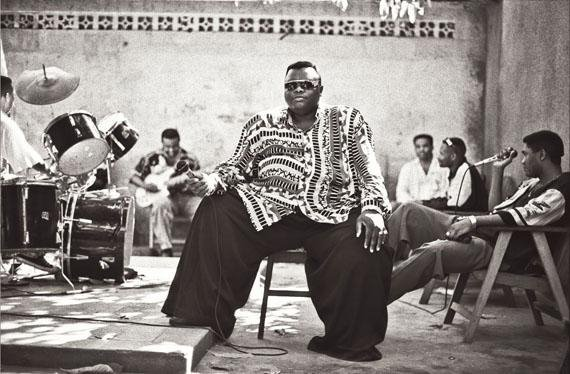

ENTERTAINMENT By Amos Ngaira By AMOS NGAIRA
Kinshasa: The Grand Empire Bakuba, whose legendary leader, Pepe Kalle (Kabaselleh Yampanya), died in 1998, recently suffered another severe blow when six key members quit to form another band. They have abandoned ace singer Papy Tex (Madolu) to start their own Empire Bakuba -- Five Stars band.
Talented solo guitarist Kinanga Boeing 737, the band leader of the splinter group, has teamed up with singers De Souza and Germain Kanza. It is widely believed that the split, the second to hit the group since the death of Pepe Kalle is a result of disagreements with Pax Tex.
The first splinter group, the Delta-Force de Pepe, was formed a few months after Pepe Kalle's death. Its key members are bassist Lufombo and rapper Djuna Mumbafu (Bileku Mpasi). The band is currently riding high with the hit song, Confirmation.
***
Nairobi: A new CD dedicated to environmental conservation, titled, Earth Song, was launched last Wednesday at the Audio Vault Studios. The enhanced CD, featuring singers Nikki (Sheila Mwanyigha) and Carol Atemi, is a joint effort by Unep's Regional Office for Africa, Compaq (EA) and Audio Vault Studios, to raise awareness about the "Save the Nairobi River" campaign.
Nikki is best known for her song, Mapenzi Tele, while Carol has been part of the duo, InTu.
***
At the Luna Park Entertainment Centre, Uhuru Park, this afternoon, there will be a special show by the newly-formed Orch Bel Air Musica. The group led by Petit Tchombe Ngoyi performs a blend of Rhumba and Ndombolo beats. Others members include bass guitarist Prince Longomba and singer Francis De Winston.
***
Meru: The Club Dimples, Milimani, will on Saturday host a disco extravaganza featuring DJ Sally B and KBC disc jockey "Crucial" Jeff Mwangemi. Patrons will be treated to soul, Lingala and reggae music.
***
Machakos: The Everest Kings Band has released a new CD titled, Nivishe Pete, which is already popular with revellers at their new base, the Great Kyama Inn.
The CD, a follow-up to singer Freshley Mwamburi's hit, Stella, also contains the songs, Boaz Olao, Wambua and Panga Mipango.
Band leader Abdul Muyonga says the new CD will be launched soon. Other members include former Orchestre Virunga vocalist Pepe Ibrahim and a former Les wanyika bassist, Tom Malanga.
***
Eldoret: Musician-cum-evangelist Ben Bahati, of the I've Given my Life to Jesus fame, and the visiting Congolese group MC band, will this afternoon entertain at a gospel music extravaganza, "Eldoret 2000 New Life Crusade," at the Huruma Grounds.
Mombasa's Abednego Mwanjala, who specialises in the accordion, is also expected. The four-day event, which started on Thursday, ends this evening.
Obituary: Pepe Kalle
19 January 1999
IN THE second half of the 1980s, Pepe Kalle, the "Elephant of Zaire", lumbered briefly across the world stage as one of the most popular international representatives of African popular music.
He was born Kabasele Yampanya, in Kinshasa, then still known by its Belgian colonial name of Leopold-ville, in 1951, when the territories of the Congo region were developing the genre known as Congolese rumba, a mixture of European and American church and popular music, a touch of jazz, a great deal of the then fashionable Latin American orchestration, and a spicing of local traditional rhythm and melody.
Because of its melodiousness, universally appealing rhythm and dynamism, and also because of the efficiency of its radio and record distribution in a continent then without a modern recorded music industry, Congolese popular music soon came to dominate the listening of the whole of Africa.
One of the founding fathers of Congolese rumba was Joseph Kabasele, "Le Grand Kalle", who had studied at St George's Catholic school in Kinshasa. The young Kabasele Yampanya attended the same school, acquired his early musical training in its choir, and adopted his eminent forerunner's name when he became a professional singer, Pepe Kalle.
Kalle gained early experience partnering the popular singer Nyboma in the Orchestra Bella Bella, then formed his own group, Africa Choc.
In the early 1970s, the newly independent Zaire, at the behest of President Mobutu, was revolutionised by the authenticity movement, replacing colonial culture and values with traditional African ones: suits and ties were out, African tunics in, mass renaming took place. Congolese rumba band leaders, spearheaded by the late great Franco, Africanised their music injecting more indigenous percussion and melody and using lyrics in Lingala, Zaire's majority language.
Combined with a multiple guitar front line and the inter-play between a lead singer and a chanting three- or four-part male chorus, this exciting new wave rumba, also known as soukous, redoubled its appeal throughout Africa. Kalle, his Africa Choc band renamed Empire Bakuba after "a Congolese tribe led by a huge and tall chieftain", was soon among its top practitioners.
Modern Zairian dance groups employ a number of devices to get audiences on their feet: animateurs shouting out the steps and catch phrases for the countless new dance crazes, dancers demonstrating them, spectacle of every sort.

Il y a 12 ans s'en allait PEPE KALLE
29 November 1998
IN THE second half of the 1980s, Pepe Kalle, the "Elephant of Zaire", lumbered briefly across the world stage as one of the most popular international representatives of African popular music.
He was born Kabasele Yampanya, in Kinshasa, then still known by its Belgian colonial name of Leopold-ville, in 1951, when the territories of the Congo region were developing the genre known as Congolese rumba, a mixture of European and American church and popular music, a touch of jazz, a great deal of the then fashionable Latin American orchestration, and a spicing of local traditional rhythm and melody.
Because of its melodiousness, universally appealing rhythm and dynamism, and also because of the efficiency of its radio and record distribution in a continent then without a modern recorded music industry, Congolese popular music soon came to dominate the listening of the whole of Africa.
One of the founding fathers of Congolese rumba was Joseph Kabasele, "Le Grand Kalle", who had studied at St George's Catholic school in Kinshasa. The young Kabasele Yampanya attended the same school, acquired his early musical training in its choir, and adopted his eminent forerunner's name when he became a professional singer, Pepe Kalle.
Kalle gained early experience partnering the popular singer Nyboma in the Orchestra Bella Bella, then formed his own group, Africa Choc.
In the early 1970s, the newly independent Zaire, at the behest of President Mobutu, was revolutionised by the authenticity movement, replacing colonial culture and values with traditional African ones: suits and ties were out, African tunics in, mass renaming took place. Congolese rumba band leaders, spearheaded by the late great Franco, Africanised their music injecting more indigenous percussion and melody and using lyrics in Lingala, Zaire's majority language.
Combined with a multiple guitar front line and the inter-play between a lead singer and a chanting three- or four-part male chorus, this exciting new wave rumba, also known as soukous, redoubled its appeal throughout Africa. Kalle, his Africa Choc band renamed Empire Bakuba after "a Congolese tribe led by a huge and tall chieftain", was soon among its top practitioners.
Modern Zairian dance groups employ a number of devices to get audiences on their feet: animateurs shouting out the steps and catch phrases for the countless new dance crazes, dancers demonstrating them, spectacle of every sort.
Remembering the gentle giant of Congo music
28 November 2015
Saturday marks exactly 17 years since burly Congolese musician Pepe Kalle Yampanya died.
He is credited with some great compositions, but also for nurturing several people with growth disabilities into celebrities. Thanks to Pepe Kalle, Ayilla Emoro became a household name in Congo and elsewhere in East and Central Africa. Other ‘small’ stars brought to the limelight included dancers Jolie Bebe and Dominic Mabwa, who made a huge physical contrast with the burly Pepe Kalle.
Fondly referred to as ‘Le Elephant’ due to his massive size and giant legs, Pepe Kalle not only had a melodious voice, but was also a master of the stage show. It was comical sometimes to see him cuddling the small dancers, who remained an integral part of his concerts. Emoro suffered a fatal heart attack during a tour of Zambia and Botswana in the early 1990s, a massive blow to the band, but Pepe Kalle soldiered on.
The spirit and legacy of his Grand Empire Bakuba band are still alive with some former members of the band resident in Kinshasa while others are based in Europe.
Pepe Kalle will be remembered for some of his big Soukous beat songs such as Moyibi, Roger Milla (in praise of Cameroonian soccer legend Roger Milla), and the highly sentimental Tika Makanisi.
At the advent of the ‘Kwasa Kwasa’ dancing style in the early 1990s, Pepe Kalle was among the artistes who popularised it across Africa.
Speaking to the Saturday Nation from Kinshasa earlier this week, Lofombo Gode, who was a bass guitarist of the Grand Empire Bakuba band, said the highlight of the event will be a visit to Pepe Kalle’s graveside in Matonge.
Later, former band members will attend Mass at a Catholic church in the Bandal suburb.
Later this evening, Lofombo hinted that there would be a special show at the Bandal Centre in Kinshasa.
Among those expected to take part are Dilu Dilumona, Djo Djo Ikomo, who had a stint with Franco Luambo Makiadi’s TP OK Jazz. Ikomo performed in Kenya in the 70s with Bana Ngenge and Les Noirs. Also expected is yet another of the ‘small’ dancers, Dominic Mabwa.